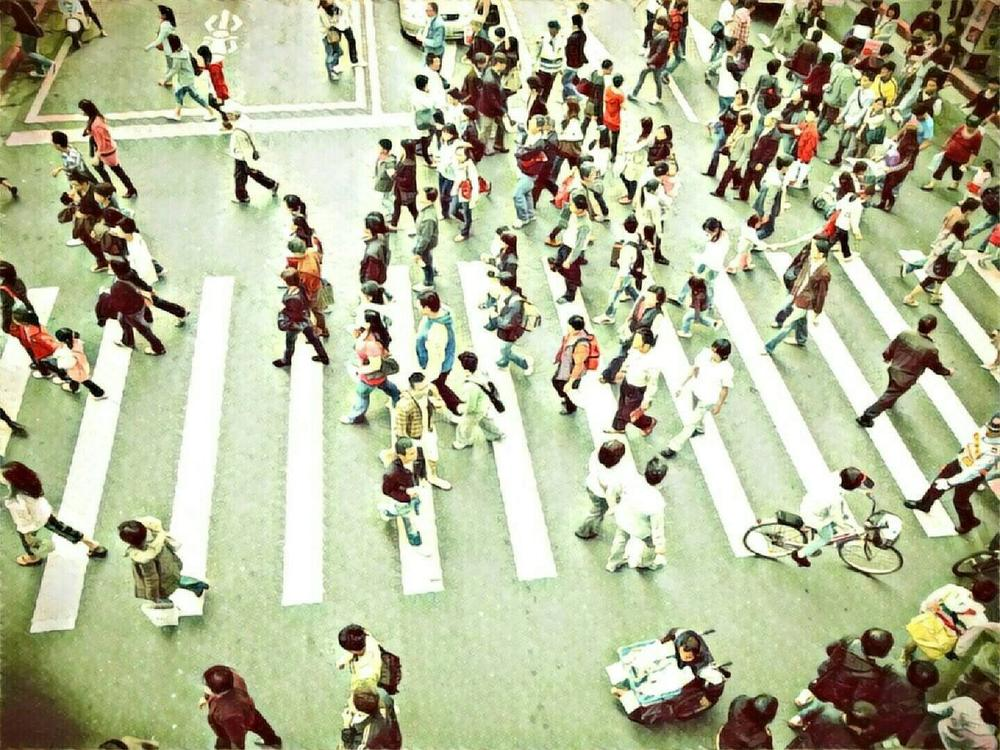

再見或再也不見
2017-11-18

大家好，我是老闆「那個誰」，人生苦短，不如聽個「故事」解解悶？
選擇離開的人，心裡究竟在想甚麼？是每個被留下的人，想問卻又無處問的疑惑。
「我哪裡做的不好？」「她是否有更好的選擇？」「為何沒有留下一句話？」「你怎麼敢就這樣走？」「還會再回來嗎？」太多太多族繁不及備載的問句，乘著悲傷、忌妒、憤怒、期望飄然地遊盪在世間，恍若一縷幽魂，穿梭在許多人的夜夢之中。
我們柑仔店就有個擺放這類故事的專區，只要靠近，他們便會發出悉悉窣窣的聲響，鑽進耳中，吵得頭昏腦脹，引人涕淚直下。偏偏這些故事又最多人買，老闆我每次踏進那片貨架，都必得帶個塞子，才能保住一天的好心情。
不過有些故事倒是特別，離開的人會用自己獨門的方式說再見：留下一封泛黃的信、落下一地煙灰、親吻孩子額頭、丟棄家中的鑰匙，一個個用來再見的事物與動作，都凝成一段月光，溫涼地照著本該被遺忘的歲月。
不管將來死生天涯，或是路口巧遇，只要還留著、記著那些用來再見的事物，或許見或不見就不再重要，誰知若真得重逢，又會否後悔想著不如不見？還是存著那時的畫面，放入罈中，保不定你還能釀出個陳年紹興，餘下的人生再細細品嚐，屆時別忘了分老闆我一杯阿。
--無論你是誰，給我你的故事，我告訴你不知道的故事--